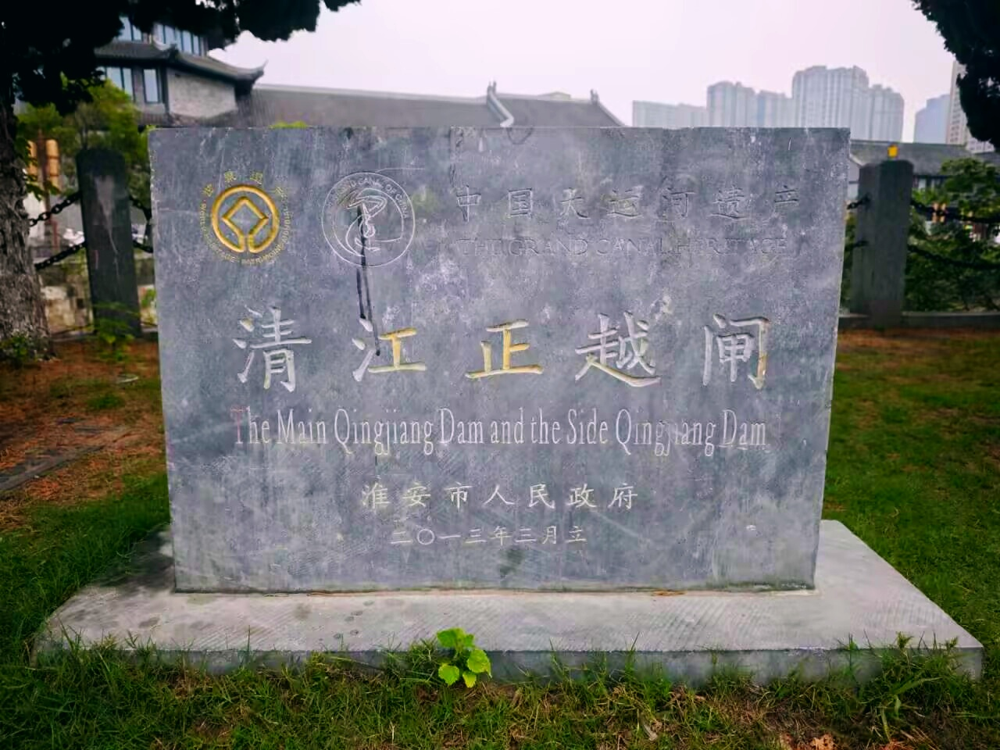
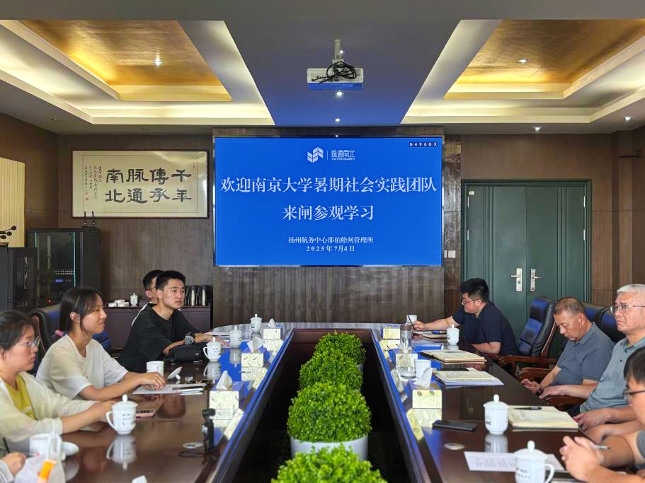
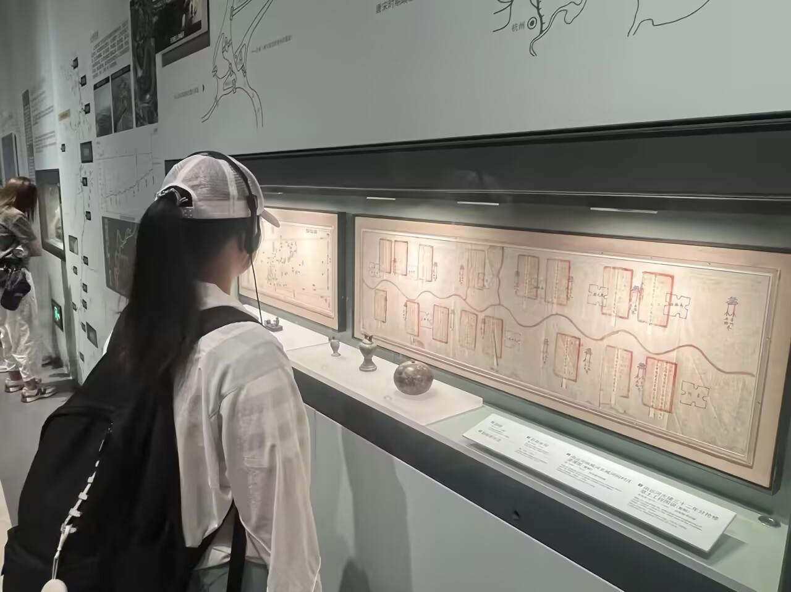
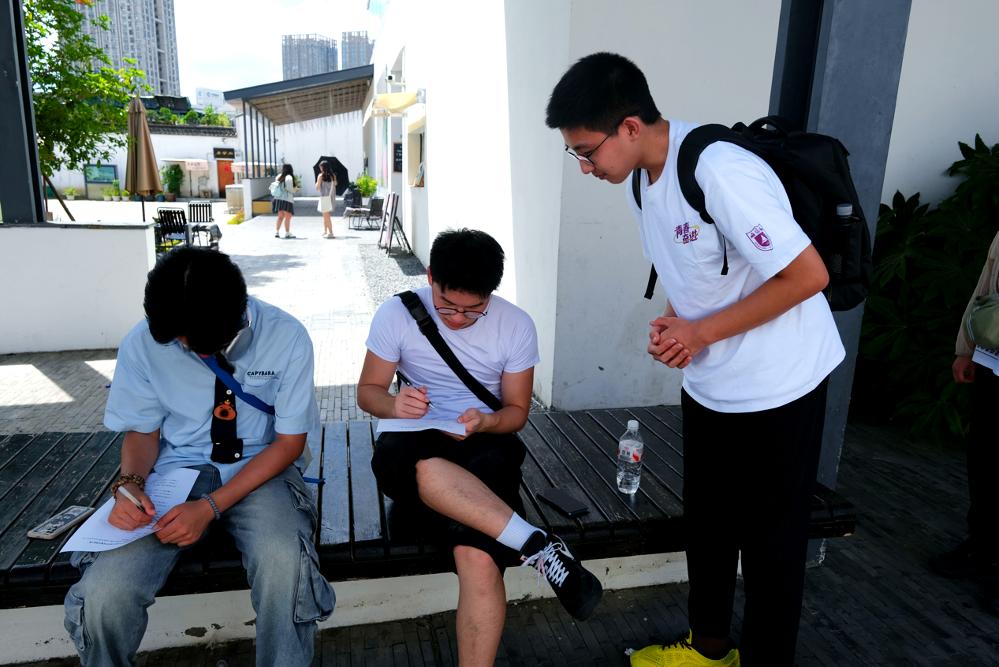

实践历程
项目启动
2025年6月，组建社会实践团队，确定“江苏运河文化带水系空间及其活化路径”研究方向，制定淮安、扬州、常州三市调研行程。
淮安调研
2025年7月4日，参访中国漕运博物馆（学习漕运历史）、清江闸遗址（考察古水利工程），同步开展周边问卷调研（回收有效问卷82份）。

左：中国漕运博物馆展厅 | 右：清江闸遗址实地考察
扬州调研
2025年7月5日，走访邵伯船闸（访谈孔所长、观摩智能调度系统）、中国大运河博物馆（体验5D虚拟航行等科技展项），完成半结构化访谈。


左：邵伯船闸管理所访谈 | 右：大运河博物馆展厅
常州调研
2025年7月19日，调研青果巷街区（考察商业化与原真性平衡）、文亨桥/新坊桥（记录古桥现状），发放线下问卷189份（有效回收率97.9%）。


左：青果巷街区问卷调研 | 右：文亨桥古桥现状记录
成果整理
2025年8月，整理调研数据（问卷/访谈/影像），撰写研究报告，建设交互式地图与成果展示网站，发布公众号推文、调研视频。